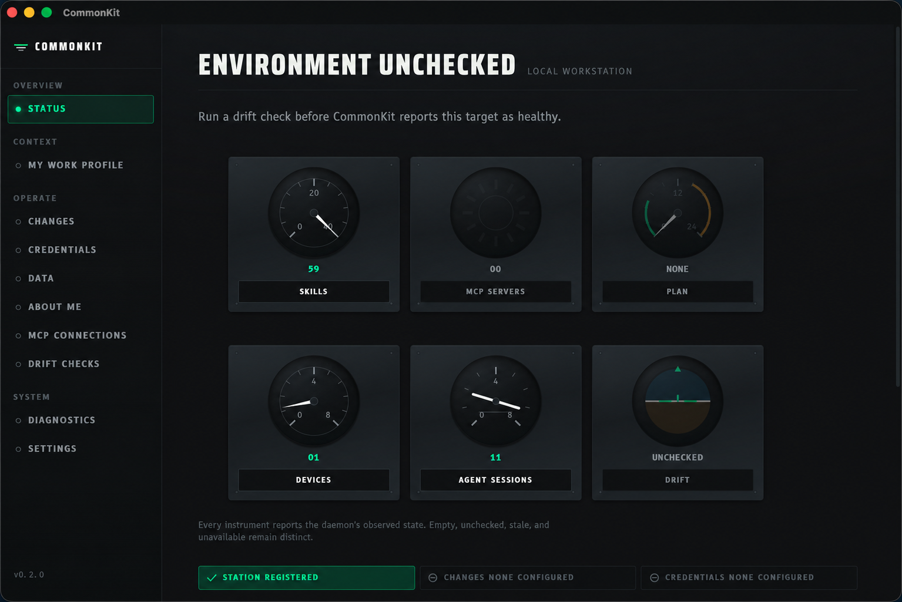

Across agents
Give Claude, Codex, and other supported agents the right skills and instructions without maintaining separate sources.
Carry proven instructions, skills, tools, policies, and working context across agents, machines, projects, and colleagues.
$ commonkit sync
inspect persondemo-kit + project-loadout
target macbook-pro / codex
plan 7 add · 2 update · 0 remove
status ready for reviewObserved state, not theater
The desktop reads one daemon-owned contract. Available, empty, unchecked, stale, and unavailable are different states—and stay that way.

Context should travel
CommonKit owns the portable intent. Adapters render the native setup each target expects.
Give Claude, Codex, and other supported agents the right skills and instructions without maintaining separate sources.
Reconcile local and SSH targets while keeping paths, services, and machine facts where they belong.
Carry project-owned context beside the code and compose it with the user's own working kit.
Share organization policy and capabilities without turning a colleague's private context into team property.
Controlled by design
Version the layers that describe your working setup.
Observe the selected target without changing it.
See the exact operations and catch drift before apply.
Approve target mutation through CommonKit transactions.
Record what happened in a durable, redacted receipt.
Unsold.Group field notes
A small AI-native company is bringing one reviewed kit across its workstation, remote host, agents, and projects so its best work can compound. “100x” is the direction: less repeated setup, fewer context gaps, and improvements that benefit every destination.
Read the full case studyPortable, not magical
CommonKit separates shared intent from target-specific facts. It keeps secret values out of portable configuration, previews mutation, and reports unsupported state as a boundary—not a silent success.
Start capable
Install CommonKit, connect a kit, and generate a read-only first plan.
npm install --global @alunsoldgroup/commonkit